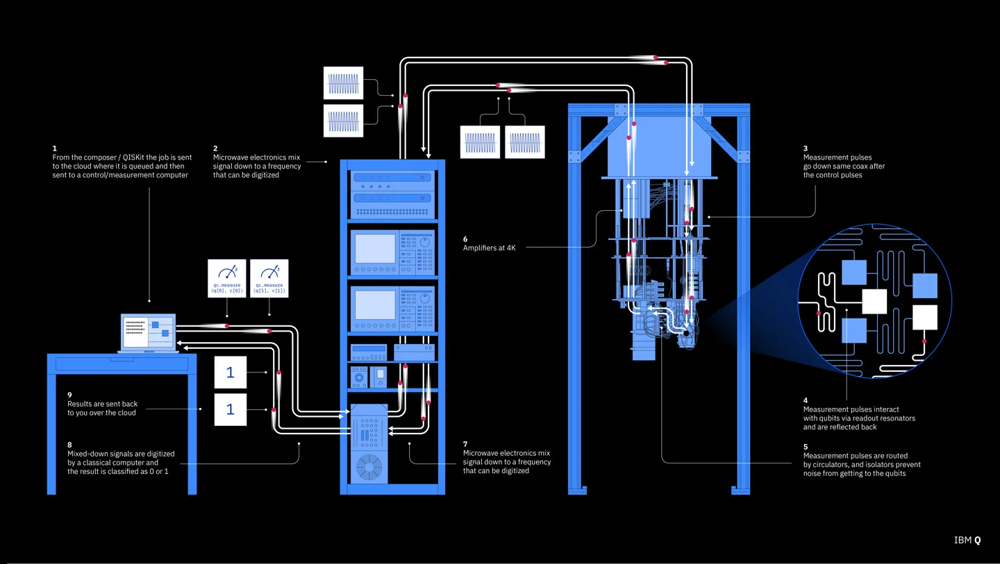

Introduction
Quantum computing is a type of computing that takes advantage of the quantum states of subatomic particles to store information. Unlike classical computers, which use bits, quantum computers use quantum bits or qubits.

How Quantum Computing Works
Quantum computers use superposition and entanglement to perform calculations exponentially faster than classical computers. A qubit can exist in multiple states at once, allowing complex problem-solving at unprecedented speeds.
Applications of Quantum Computing
- Cryptography and Cybersecurity
- Drug Discovery and Material Science
- Optimization Problems
- Artificial Intelligence and Machine Learning
Future of Quantum Computing
The future of quantum computing is promising, with advancements in quantum algorithms and hardware expected to revolutionize industries such as finance, healthcare, and artificial intelligence.